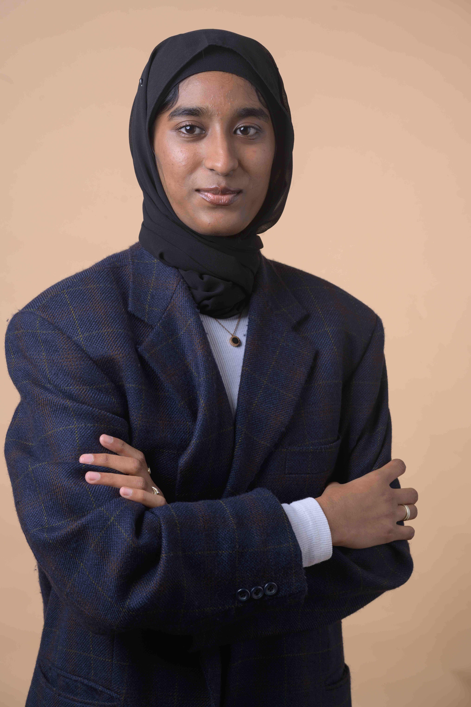

Building intelligent systems, one model at a time.
I'm Shafiya Kausar — an AI engineer and data scientist working out of Paris. Currently building agentic RAG and forecasting systems at INSEAD (on assignment via SPIE ICS), previously at Aivancity, AURA, NeuralTeks, and IntHealth.

Outcomes from shipped work, not slide decks.
Forecasting accuracy on a device-lifecycle model deployed institution-wide.
INSEAD · SPIE ICS · 2026User engagement uplift from a mood-to-genre NLP recommendation pipeline.
IntHealth · 2025Improvement in seizure-detection accuracy on ECG signals via CNN/RNN models.
AURA · 2025mAP achieved on a multimodal retrieval system using CLIP and Flux pipelines.
NeuralTeks · 2024I work where research meets production — the unglamorous, important middle. Take messy real-world data, build the right model for it, and make it useful to someone.
Published & forthcoming writing.
When LLM Signals Hurt: A Coverage-Density Analysis of LLM-Augmented Reinforcement Learning for Stock Trading
Sole-authored study on the limits of LLM-augmented reinforcement learning for Nasdaq-100 trading — signal coverage-density analysis and honest non-RL baselines.
SSRN ↗ · SocArXiv (OSF) ↗ · Code ↗Agentic Artificial Intelligence for Preventive Healthcare and Early Diagnosis: Architectures, Algorithms, and Human-Centric Clinical Decision Systems
Accepted book chapter in Agentic AI for Sustainable Solutions in the Delivery of Healthcare (Elsevier). ISBN 9780443493898. In production.
ResearchGate ↗Agentic AI for Predictive Analytics in Industry 5.0: A Technical Review of Algorithms and Use Cases Across Healthcare, Manufacturing, Education, and Sustainable Engineering
Accepted book chapter in Empowering Autonomy: The Shift from Generative to Agentic AI in Collective Intelligence Systems (CRC Press, Taylor & Francis). In production.
ResearchGate ↗Selected talks & presentations.
PhenoPrompt: A Prompt-Based Clinical Phenotyping Framework Using Entity Extraction, Unsupervised Clustering & Retrieval-Augmented Generation
Oral presentation at the inaugural edition of IANLP 2026 — the International Conference on AI & NLP, Hassan II University of Casablanca, Morocco (online).
Conference ↗ · Paper ↗ · Code ↗ · Live demo ↗ · Certificate ↗PhenoPrompt (poster): Clinical Phenotyping with Entity Extraction, Clustering & RAG
Poster at the international conference on clinical LLMs at the Health Data Hub, Paris, with updated results scaled to 30k clinical notes.
Conference ↗ · Poster ↗ · Code ↗ · Live demo ↗Detecting LLM Hallucinations with Uncertainty Fingerprinting: A Python Implementation
90-minute workshop (with Anuradha Kar) at PyConES 2026 — the Spanish national Python conference — held in person at Universitat de Barcelona, Spain. Based on the Metacognitive Uncertainty Layer research.
Conference ↗ · Paper ↗ · Code ↗ · Live demo ↗ · Attendance certificate ↗OncoTwin: A Living, Probabilistic, Multimodal Digital Twin of a Cancer Patient with Calibrated Uncertainty
Poster accepted at the Women in Machine Learning workshop, Paris.
Workshop ↗ · Abstract ↗ · Code ↗ · Live demo ↗